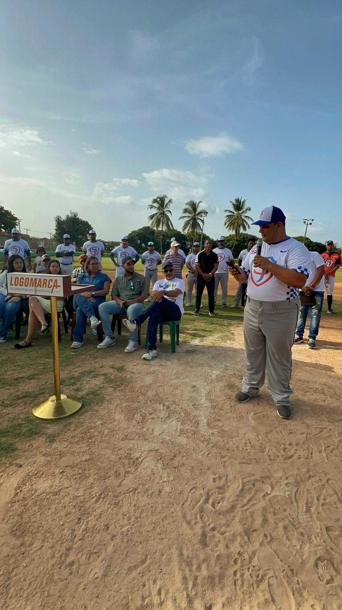
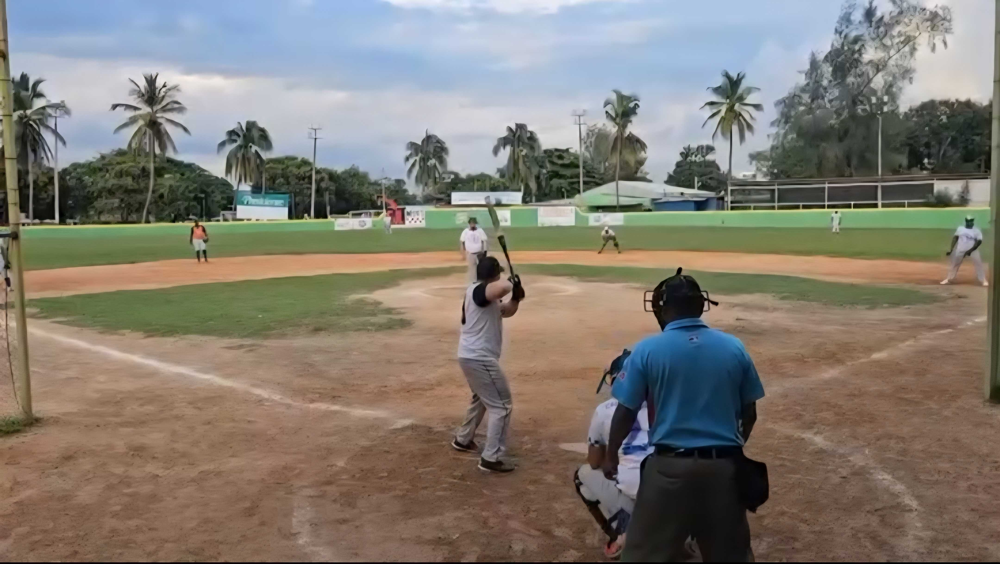
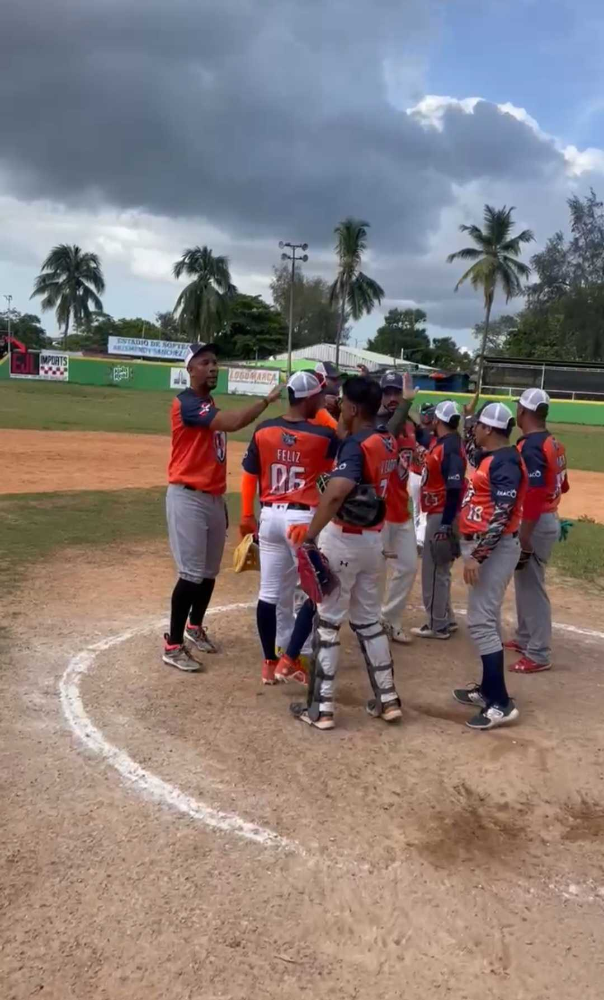
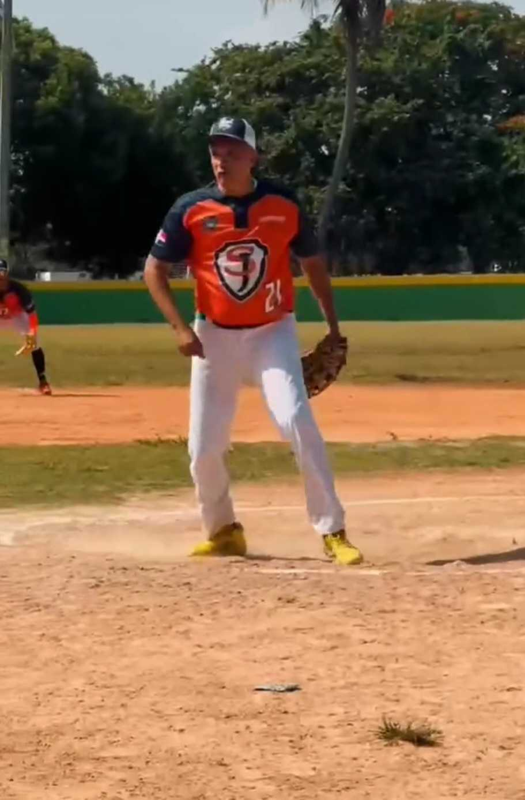
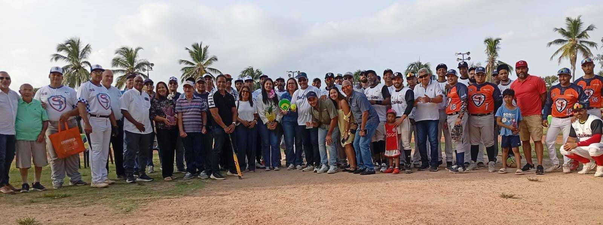

Acompáñanos en el emocionante inicio del TORNEO INTERNO CHATA #37 de la Liga de Softball de San Jerónimo.
Ven a presenciar el lanzamiento de la primera bola y el desfile inaugural de nuestro trigésimo séptimo torneo interno. Será una tarde llena de emoción, espíritu deportivo y comunidad en San Jerónimo. ¡No te pierdas el inicio de la acción Chata!
Sabado 09 de Mayo
2:00 PM
Play de la Liga de San Jerónimo

© @ligasoftballsanjeronimo
Imágenes tomadas de nuestra comunidad en @ligasoftballsanjeronimo. ¡Pasión Chata!




Contendiente Chata 2026
Contendiente Chata 2026
Contendiente Chata 2026